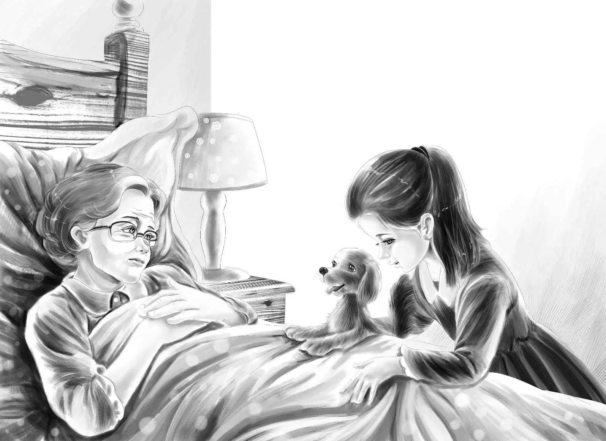

Aunt Jane’s Nurse
第二天，简姑婆的心情又变差了。亨利和班尼本来打算开心地在农场四处转转，结果却见识了姑婆的坏脾气。
“来，简！”杰西和维莉听到麦琪说，“我来给你洗洗脸和手吧！”
“不！”屋里传来一声尖厉的回应。望望看着姑婆的房门，竖起了一只耳朵。
“真拿你没办法，”麦琪喊道，“早饭不吃，不让洗漱，不让整理床，你想让我怎么样——要不要打开窗户？”
“不要！屋里已经很冷了。”小老太太说。
“你刚才还说太热呢！”
“没错，可那是刚才！”
“哦，天哪。”麦琪无奈地说。
姐妹俩面面相觑，望望站起来，看了看门口。维莉把最后一摞碟子放到橱柜里。突然，麦琪从卧室里冲出来，关上门，差点儿哭出声来。
“孩子们，我今天没有一点儿办法了。你们来之前，她一直都是这个样子。我还以为她现在变好了呢！”
“不知道我进去了她会怎么说，”维莉说，“我去试试吧！”
“你真的要进去吗？”杰西问，“说不定她今天对谁都会发脾气的。”
“就算真是这样也没关系，杰西，”维莉答道，“我不会太受伤的。”
“如果她说话刻薄，你当然会受伤害！”杰西大声说，“我也会很难过的。”
“可我还是想去试试，”维莉说，“把肥皂给我吧！”
维莉轻轻地敲了敲简姑婆卧室的门。
“简姑婆，我是维莉。我能进来吗？”
“行，进来吧。”姑婆答道。
维莉轻手轻脚地走进房间，把几张报纸铺到简姑婆床边的椅子上。她把洗脸盆放到报纸上，将热水倒进盆里。
“今天真热，”维莉愉快地说，“我觉得用热水洗洗能让您凉爽一点儿，是吧？”

“也许吧！”简姑婆看了看漂亮的小女孩。
“我以前总生病，”维莉接着说，“照看过我的护士说的。”
维莉抬起姑婆瘦小的手，用温暖的肥皂水轻轻地洗着。洗完后，她用软毛巾把姑婆的手擦干。
“家里只要有人生病，都是我照顾的。”维莉说，“将来我还想当护士呢。”
维莉又洗了另一只手，然后把简姑婆的头发挽起来，给她洗了脸。
维莉正在给姑婆擦脸时，望望摇着尾巴，慢慢地走了进来。简姑婆看见了它。
“今天我可不想跟你玩，”姑婆说，“快回厨房去！”
望望一声不吭，正要往厨房走。这时，它转身看了看维莉。
维莉说：“望望，你真乖，我喜欢你！可是，简姑婆要你回厨房去。”
望望可怜兮兮地看了她俩一眼，伤心地走了，这次没有摇尾巴。
“算了，”简姑婆大声说，“回来吧，你可以留在这里！我还没见过像你这么通人性的小狗呢。想来就来吧！”
望望高兴地跑过去，把爪子伸到白色的床单上。
“不要！”维莉喊道。
“没关系，来吧！”简姑婆说。
“我们从来没让望望上过床。”维莉轻声说道。
“我喜欢让小狗在床上玩。”简姑婆说。
望望看了一眼姑婆，又看了一眼维莉。
“上来吧！”简姑婆说。
望望用力一跳，跃上了床。它趴在姑婆的身边，把脑袋贴在前爪上，好像不确定自己做得对不对，便一直瞅着维莉。
维莉则看着姑婆，发现她正在冲望望微笑。维莉现在确信，望望做得对极了。